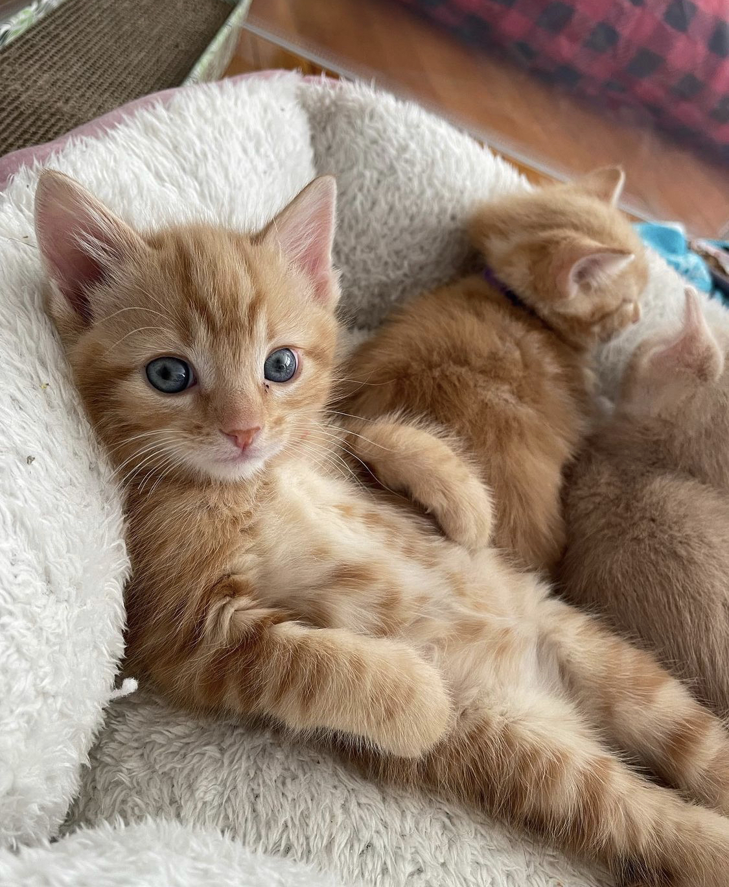
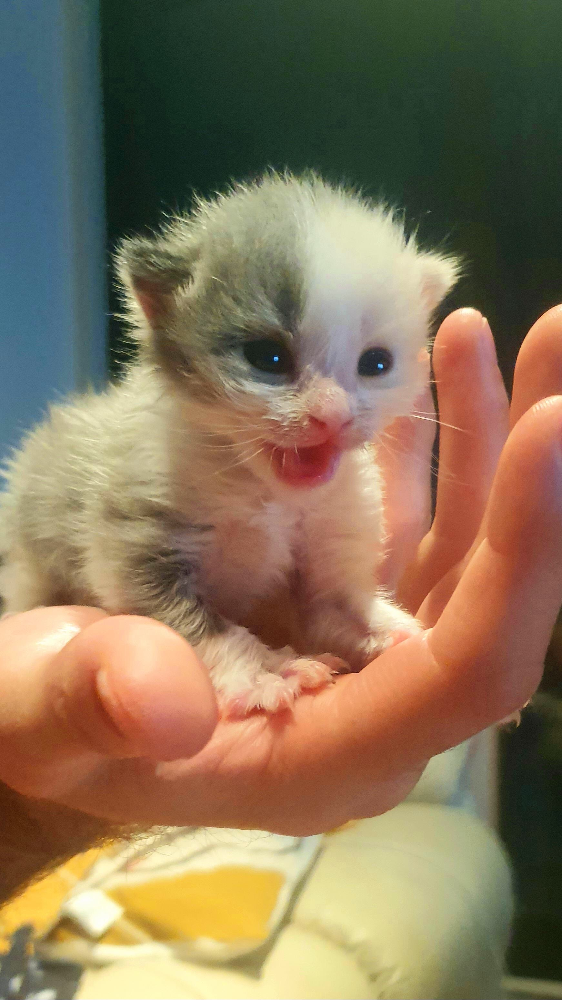
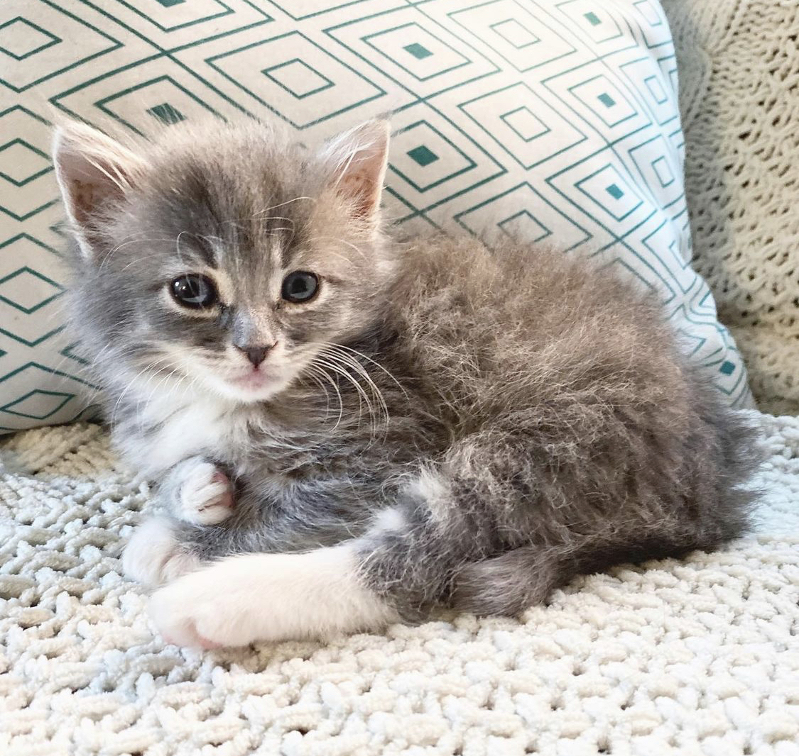

Kitten Media!

Look at how small and adorable little Pinot is!!!ðŸ˜ðŸ¥°ðŸ’˜

Look at how precious Max and Leo are together 💖💖

Bella may be a kitten, but she's already a pro at relaxing 😎👌

Oh my gosh!! Look at how little she is 🥺🥺 Such a baby 💞💞

What a smart kitten 😂😂 One day maybe he'll become a philosopher of catology 🤓

Our kitten looks so pretty, her gray fur is so adorable